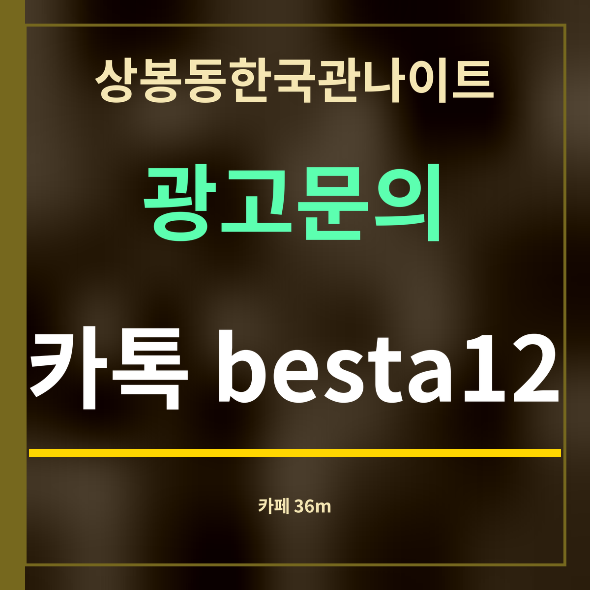

19세 미만 출입 금지
상봉동한국관나이트 근처 카페 정리, 36m 앞부터 8곳
제휴 없는 정보 안내 · 카페 위치는 카카오맵 검색(2026년 9월 27일), 거리는 직선거리입니다. 영업시간은 목록에 없어 적지 않았습니다.

바로 답: 상봉동한국관나이트에서 가장 가까운 카페는 망우로 322의 카페로 직선 36m입니다. 200m 안에 카페가 세 곳 있습니다.
거리순 카페
| 이름 | 주소 | 직선거리 |
|---|---|---|
| 투썸플레이스 상봉역점 | 중랑구 망우로 322 | 36m |
| 이디야커피 상봉중앙점 | 중랑구 망우로 316 | 116m |
| 스타벅스 상봉역점 | 중랑구 망우로 307 | 193m |
| 매머드익스프레스 상봉역베스트원점 | 중랑구 망우로 304 | 212m |
| 허밍버드 | 중랑구 상봉중앙로1가길 1-10 | 215m |
| 설빙 상봉역1번출구점 | 중랑구 망우로 305 | 222m |
| 더카페 상봉역점 | 중랑구 면목로 495 | 306m |
| 벌크커피 상봉점 | 중랑구 망우로 294 | 320m |
이럴 때 쓰기 좋습니다
일행이 늦게 오거나 약속 시각보다 일찍 도착했을 때, 가게 앞에서 서성이기보다 가까운 카페에서 기다리면 편합니다. 36m 앞 카페라면 일행이 도착했다는 연락을 받고 바로 움직일 수 있습니다.
늦은 밤에는 문을 닫는 카페가 많으니 영업시간을 먼저 확인하세요. 술자리 전후로 물이나 따뜻한 차를 한 잔 마셔 두는 것도 좋습니다.
카페가 닫았다면 편의점
늦은 밤에는 카페 대신 편의점에서 물이나 따뜻한 음료를 사는 편이 쉽습니다. 상봉동한국관나이트에서 가장 가까운 편의점은 망우로 313의 편의점으로 직선 145m이고, 면목로92라길(227m), 상봉역 건물 안(279m)에도 있습니다(카카오맵 검색 · 2026년 9월 27일).
자주 묻는 것
가장 가까운 카페는 어디인가요?
망우로 322의 카페로, 상봉동한국관나이트에서 직선 36m입니다.
밤늦게도 여나요?
영업시간은 곳마다 달라 적지 않았습니다. 지도 앱에서 확인하세요.
몇 곳이 있나요?
카카오맵 검색으로 가까운 8곳을 모았고, 200m 안에 세 곳이 있습니다.
한 줄 정리: 상봉동한국관나이트 36m 앞에 카페 — 일행을 기다리기 좋습니다.
현금이 필요하면 근처 ATM을 보세요.